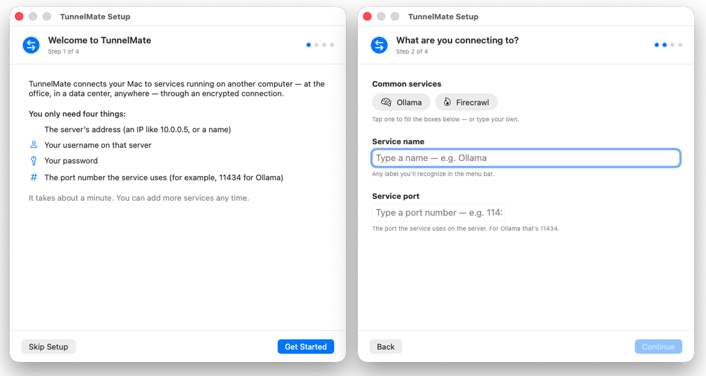
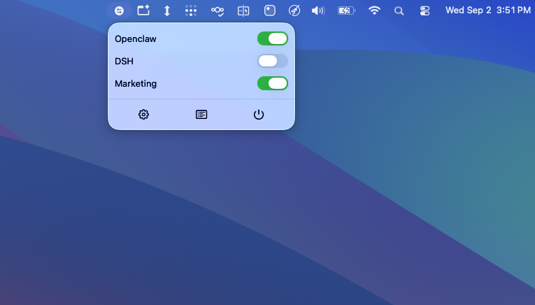
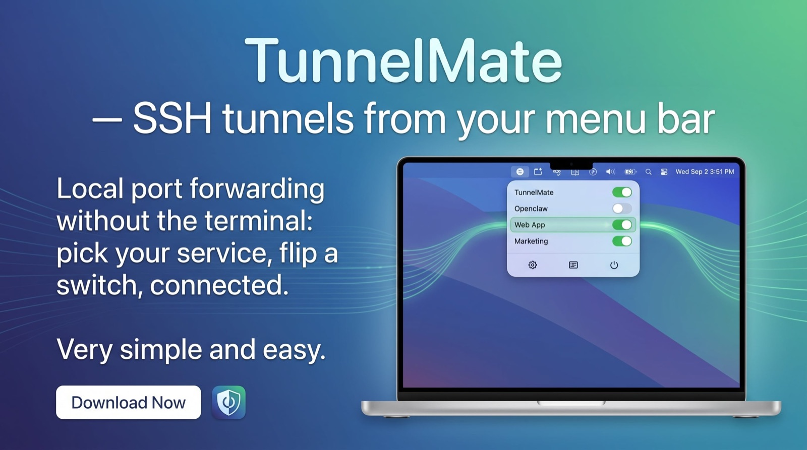

Local port forwarding without the terminal — pick your service, flip a switch, connected.
Setting up an SSH tunnel on a Mac usually means a long ssh -N -L command every morning, a terminal window you can't close, and no idea whether the tunnel actually works until something fails. TunnelMate is a menu-bar SSH tunnel manager for macOS that does it for you: a four-step wizard, one switch, and a Connected status that only appears when the service on the other end actually answers.
One-time purchase · Free updates to the 1.x series · Requires macOS 14 or later.
✓ Flip a switch — no terminal, nothing to memorize
✓ "Connected" is health-checked, not assumed
✓ Auto-reconnects after network drops and sleep
✓ Secrets live in your Keychain, never in config files
✓ Drives the system ssh — your existing setup works
TunnelMate manages SSH local port forwarding: it forwards a port on your Mac (say, localhost:11434) to a service running on a remote server, so local tools can reach it as if it were local. That is the part it automates — the wizard, the connection, the reconnection, and the verification that the service actually responds through the tunnel.
It is not another SSH client and it does not replace your terminal. It drives the system ssh already on your Mac, so everything your terminal can reach — your existing ~/.ssh/config, keys, and agent — TunnelMate can tunnel.
Built for people who tunnel to the same services every day:
Self-hosting AI tools yourself? Self-Hosted RAG pairs well with a tunnel-managed Ollama box.
The setup wizard asks for a service name, its port, the server, and your username. That is the whole form.
Each service appears in your menu bar, with its own switch. Saved servers are reused across services.
TunnelMate launches the tunnel, then verifies the remote service actually answers — only then does it show Connected.
Click Open Service to jump straight to http://localhost:<port>. Done.

Without a tunnel manager, port forwarding on a Mac means ssh -N -L 11434:127.0.0.1:11434 user@host in a terminal tab you keep open, re-run after every network change or sleep, and re-check by hand when a page suddenly won't load.
TunnelMate reconnects automatically with backoff when the network drops, recovers after sleep/wake, and tells you the true state of the tunnel — because it checks the service, not just the SSH process.

Passwords and passphrases are stored in the macOS Keychain — never in config files — and logs are scrubbed of secrets. The app is a signed and notarized Mac app: Developer ID signed, notarized by Apple, install by dragging the DMG to Applications.
An unknown or changed host key opens a review sheet where you compare fingerprints before trusting the server — the same caution the terminal gives you, without the raw yes/no prompt.
Password, SSH key, or ssh-agent — all supported. Endpoints can be imported from your existing ~/.ssh/config, so there is nothing to re-enter.
When a connection fails, TunnelMate translates the error into a plain-language cause and fix — instead of leaving you to decode SSH's exit output.
~/.ssh/confighttp://localhost:<port>ssh -N -L 11434:127.0.0.1:11434 user@host, kept running in a terminal. TunnelMate wraps that in a menu-bar app: a four-step wizard (service name, port, server, username), then a switch you flip. It launches the tunnel, health-checks it, and shows Connected only when the remote service answers.ssh on your Mac, so it works with everything your terminal ssh already uses: your ~/.ssh/config, identity files, and ssh-agent. You keep your terminal for everything else.http://<mac-ip>:<port> from any device on the same network.Set your services up once, flip the switches, and let the tunnels take care of themselves.
